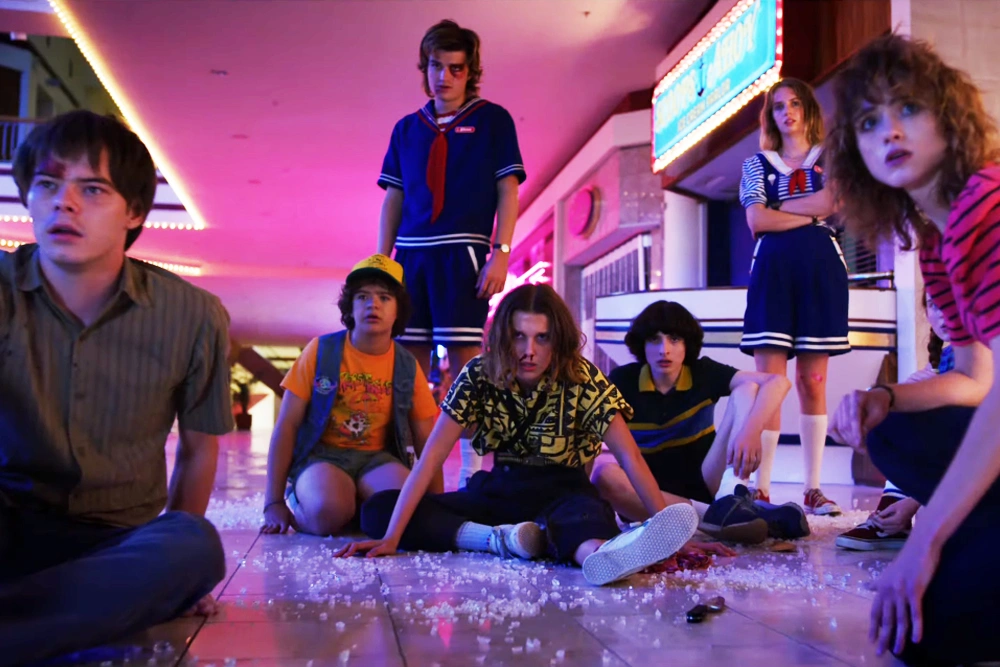
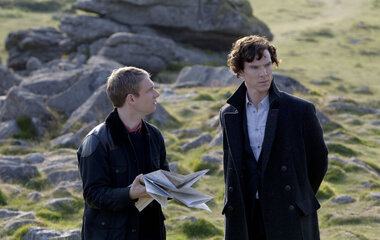
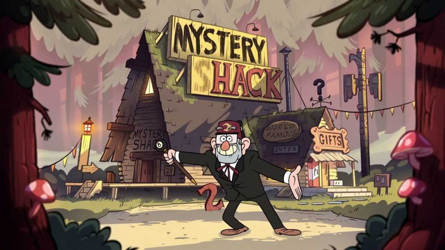
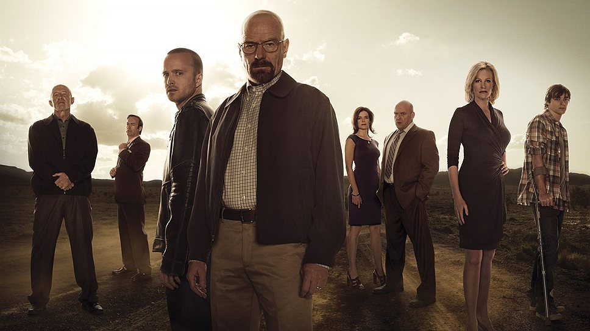
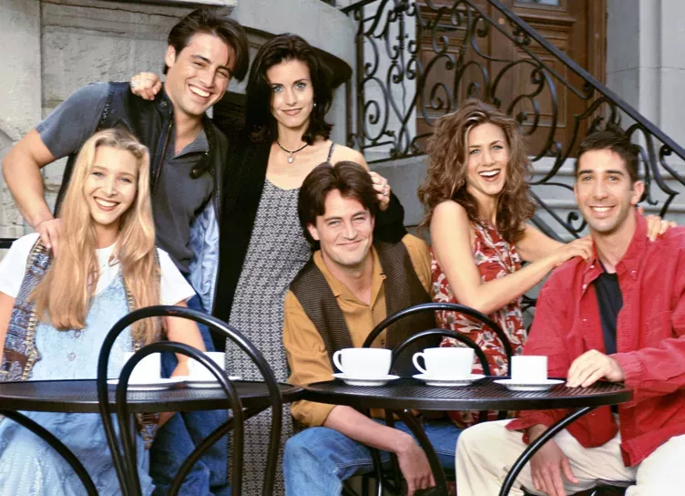
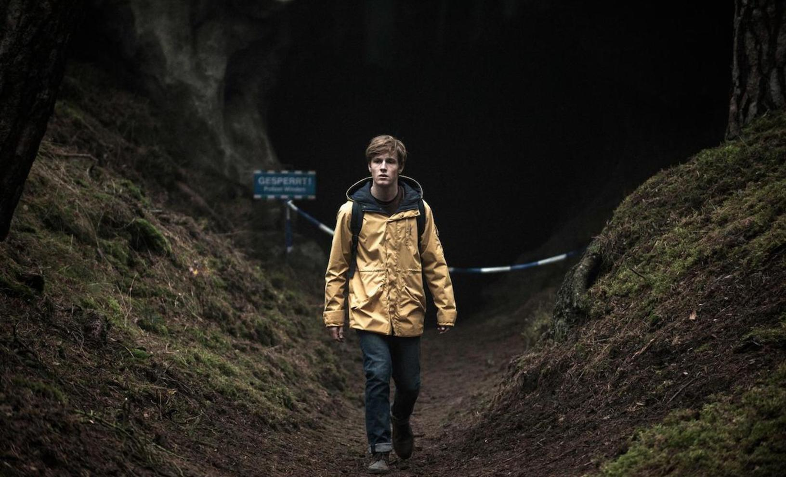
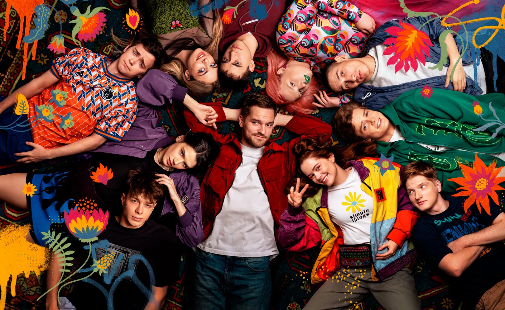

Если еще несколько десятилетий назад сериалы считались необязательным развлечением, то сегодня они превратились практически в важный вид современного искусства. Мы помним эталонные сериалы, получившие самые высокие рейтинги и признание критиков, заставляющие нас ждать новых эпизодов или пересматривать целые сезоны бесчисленное количество раз. Поэтому встречайте мою подборку 10 самых лучших сериалов.
На данном сайте будет идти речь о 10 фильмах таких как:Игра престолов» — едва ли не главный зарубежный сериал последних лет и настоящий феномен телевидения. Финал вызвал огромную дискуссию в обществе и разозлил преданных фанатов. Однако спорная концовка не заставила зрителей разлюбить сериал: «Игра престолов» до сих считается одним из самых популярных сериалов и стабильно входит в топы лучших сериалов XXI века. Так в чем же причина ажиотажа вокруг, казалось бы, жанровой истории? Скорее всего, успех кроется в неожиданных поворотах сюжета и множестве фактурных героев: за каждым персонажем интересно следить и гадать, что же произойдет дальше и кто умрет на этот раз. Неудивительно, что в копилке сериала значатся престижные награды индустрии: «Золотой глобус», «Эмми», «Сатурн» и другие. Сериал основан на популярном цикле романов Джорджа Мартина «Песнь льда и пламени». Начинается борьба за власть Семи королевств. Противостояние между Ланнистерами и Старками достигает своего апогея. В это время Дейенерис Таргариен (Эмилия Кларк), будучи в изгнании, формирует армию и намеревается вернуть отцовский трон. Но с севера на мир надвигается страшная беда. «Игра престолов» — масштабное полотно о дворцовых интригах, силе любви, кровожадной мести и предательстве.

Этот мини-сериал HBO посвящен аварии на Чернобыльской АЭС в 1986 году — одной из крупнейших катастроф в истории атомной энергетики, ликвидации ее последствий и расследованию причин трагедии. Действие сериала начинается с того, что Валерий Легасов, заместитель директора Института атомной энергии им. Курчатова и член правительственной комиссии по ликвидации катастрофы в Чернобыле, кончает жизнь самоубийством 26 апреля 1988 года, перед этим записав шесть аудиокассет с воспоминаниями о трагедии. Далее сюжет проекта переносится в день аварии и последовательно рассказывает о страшной катастрофе и действиях властей СССР. Кроме основной сюжетной линии сериал рассказывает об усилиях пожарных, которые первыми прибыли на место происшествия, и групп горняков, прорывших туннель под пострадавшим реактором.

1980-е годы, тихий провинциальный американский городок. Благоприятное течение местной жизни нарушает загадочное исчезновение подростка по имени Уилл. Выяснить обстоятельства дела полны решимости родные мальчика и местный шериф, также события затрагивают лучшего друга Уилла – Майка.
Шерлок Холмс - литературный персонаж, созданный талантом английского писателя Артура Конан Дойла (1859-1930). Его произведения, посвященные приключениям знаменитого лондонского частного сыщика, по праву считаются классикой детективного жанра
Мультсериал повествует о приключениях близнецов, Диппера и Мэйбл Пайнс, которые проводят летние каникулы у дядюшки Стэна в вымышленном американском городке под названием «Гравити Фолз».
«Во все тяжкие» — один из самых запоминающихся сериалов за последние 20 лет. Сочетание мастерского повествования, исключительной актерской игры и потрясающих визуальных эффектов сделало его настоящим культурным феноменом, который повлиял на бесчисленное множество других сериалов, вышедших после него
«Друзья» (англ. Friends) - американский комедийный телесериал, повествующий о жизни шестерых друзей. Признан одним из лучших комедийных сериалов в истории американского телевидения и стал одним из наиболее знаменитых проектов 1990-х годов. Сама постановка и творческая группа получили множество наград, в том числе шесть премий «Эмми» и премию «Золотой глобус».
Действие сериала разворачивается в вымышленном городке Винден (Германия). События, начало которым положило исчезновение двух детей, раскрывают тайны и скрытые связи четырёх семей Виндена, которые постепенно узнают зловещую тайну о путешествиях во времени, затрагивающих несколько поколений.
Трудные подростки: посмотрите социальное драмеди о футбольной команде аутсайдеров 15 декабря 2023 года на Wink стартует пятый, финальный сезон сериала «Трудные подростки». Шоу рассказывает о бывшем футболисте Коновалове: он пытается перевоспитать сложных подростков и сделать из них команду.
